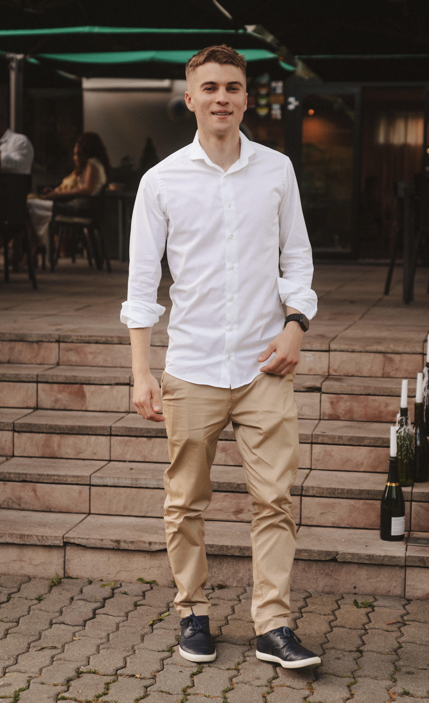

01
01
WEB · IDENTITA
Zelené Vlčince
Digitálny domov pre miesto, kde sa mestský život stretáva s prírodou.
PORTFÓLIO 2026
Tvorím digitálne zážitky, ktoré sú premyslené, užitočné a príjemné na pohľad.
Otvorený/á novým spoluprácam

VÝBER Z TVORBY 01 — 03
Každý projekt sa začína otázkou. Tu sú tri odpovede, na ktorých mi záleží.
01
WEB · IDENTITA
Digitálny domov pre miesto, kde sa mestský život stretáva s prírodou.
 02
02
APLIKÁCIA · UX/UI
Jednoduchšia cesta mestom, od prvého kliknutia až po cieľ.
 03
03
BRANDING · E-SHOP
Malá kávová značka s veľkým dôrazom na každodenné rituály.
PÁR SLOV O MNE 02 — 03

Baví ma prepájať nápady, ľudí a technológie do vecí, ktoré fungujú aj dobre vyzerajú.
Od prvého náčrtu po posledný detail hľadám riešenia, ktoré sú zrozumiteľné a majú svoj dôvod. Verím, že kvalitná tvorba nemusí byť komplikovaná — stačí jej pozornosť, zvedavosť a dobrá spolupráca.
Poďme sa porozprávať